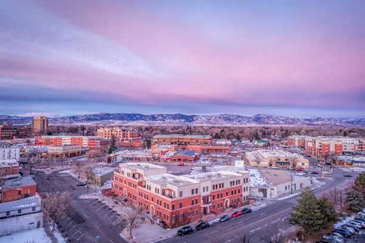

I like the fact that Fort Collins is so close to the mountains and nature that you can hike and visit nature whenever you want. As well as being able to have a place downtown where there are a ton of social places and old buildings that people congregate around and socialize which makes the city feel cozy.
